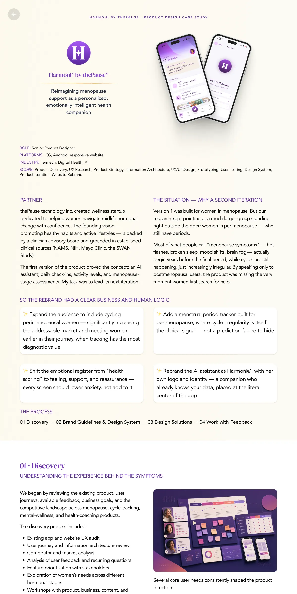
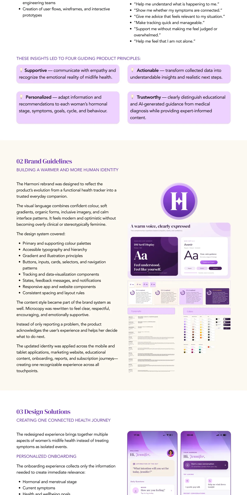
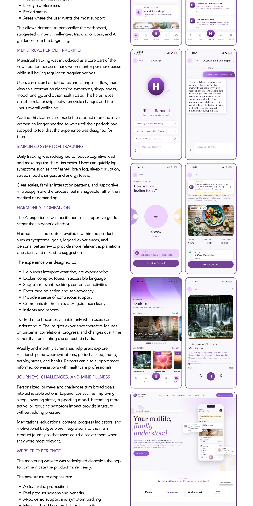
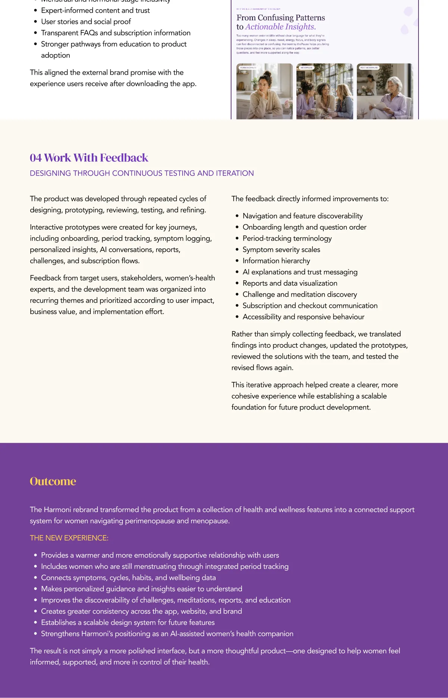
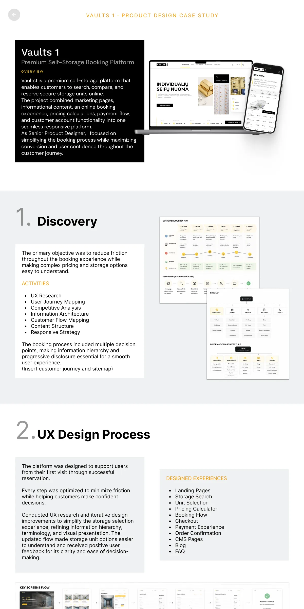
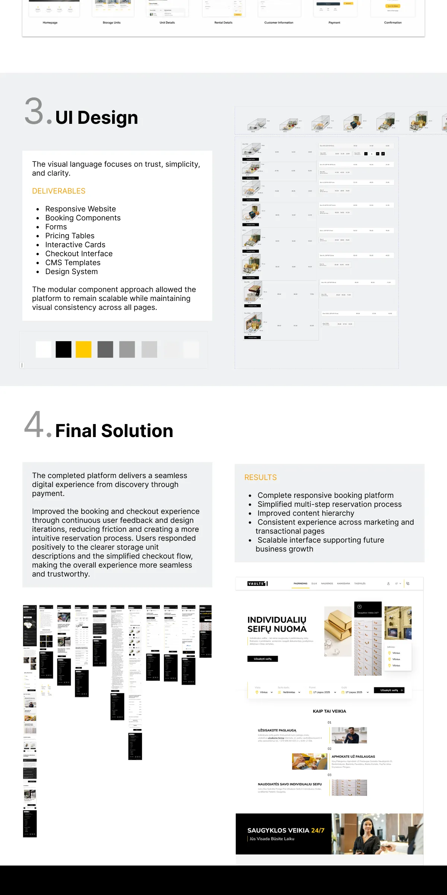
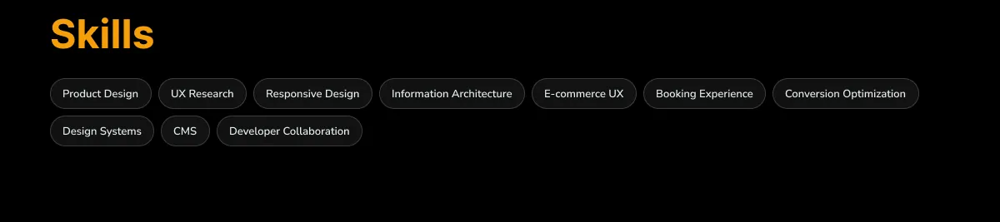

Product & UX
From strategy and research to clear, useful, accessible experiences.
- Product Strategy
- UX Research
- User Flows
- Usability Testing
OLESYA LEVYTSKA / SENIOR PRODUCT & UX/UI DESIGNER
I combine research, product analytics, and thoughtful UI design to make complex journeys easier to use. I work closely with teams through design, implementation, and iteration.
01 / SELECTED WORK
A focused selection across health, SaaS operations, and self-service booking.




Personalized menopause support shaped through research, behavioral insights, and ongoing product iteration.
View case study ↗


Role-based workflows that make yacht operations, vessel data, and team collaboration easier to manage.
View case study ↗


A clearer search-to-reservation journey for comparing storage options and moving confidently toward booking.
View case study ↗02 / EXPERTISE
Product thinking, grounded in evidence and connected to delivery.
From strategy and research to clear, useful, accessible experiences.
Turning user behavior into clear, actionable design decisions.
Consistent, inclusive interfaces built to scale with the product.
Exploring ideas faster and connecting design with implementation.
A practical toolkit, from first insight to working product.
03 / UX, EXPLAINED SIMPLY
Short practical notes and carousel posts about accessibility, product decisions, analytics, and research.
UX, Explained Simply #14 — test assumptions at every stage: one screen, clickable prototype, AI-built prototype, and live product analytics.
Clarifies when button boundaries and adjacent colors need enough contrast to remain perceivable.
UX, Explained Simply #12 — repeated user mistakes can point to unclear hierarchy, timing, or interaction design.
UX, Explained Simply #13 — button placement is a platform convention, and platforms do not always agree.
UX, Explained Simply #15 — color alone can make an interface confusing, even when contrast is technically good.